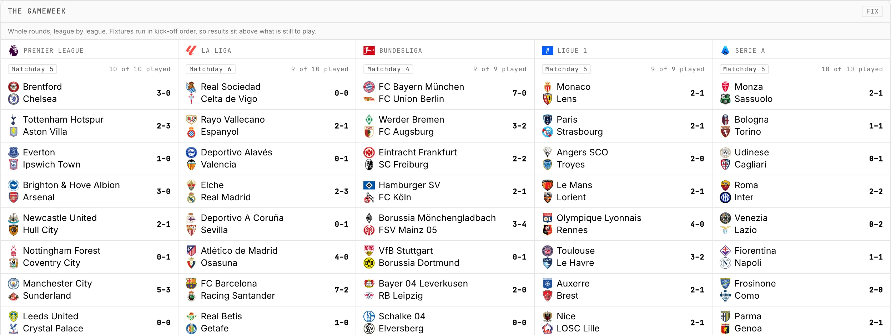
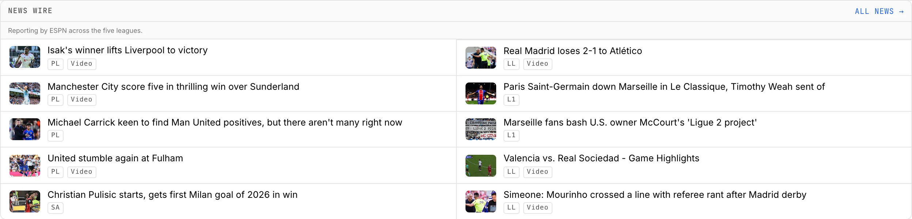
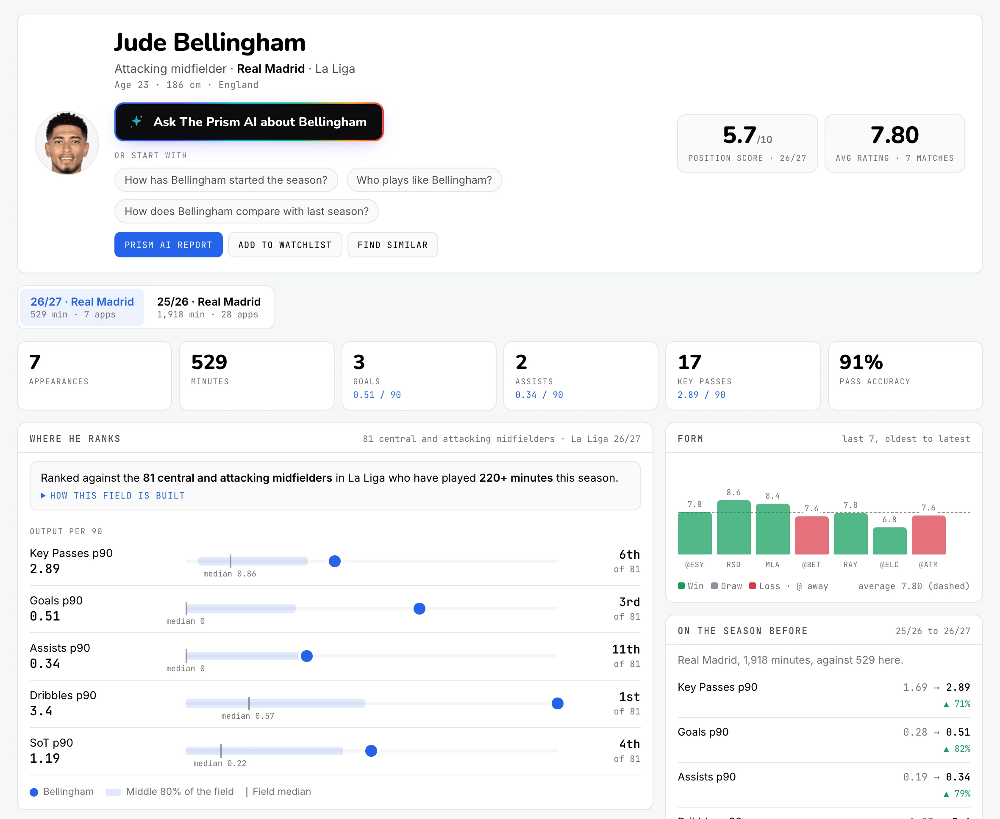

AI-powered football intelligence at your fingertips. Ask it anything to settle arguments, make decisions, or fulfil your curiosity.
Free while it's in beta. We're letting people in a few at a time.
Every matchday
Every result in the five leagues as it goes in, next to the day's headlines. Open any match to see how it actually went.


Watch it work
Real answers from the app, at the time of recording. You see the steps as well as the result.
Your indexes
Describe the player you're after in your own words. The Prism turns it into a ranking and keeps it on your Home, where it updates itself every matchday.
A real index: the sentence above went through the app's interpreter and was ranked against every player in the five leagues. Viewing and saving one costs nothing.
Player pages
Where he ranks against his position, his form, how he's changed since last season, and The Prism AI analysis one click away.

Where the numbers come from
Match stats for every player in the Premier League, La Liga, Serie A, the Bundesliga and Ligue 1, pulled as the games are played and analysed afterwards.
Every player is scored by The Prism's own model, built separately for each position. That's what powers the comparisons, the scouting briefs and the rankings you build yourself.
Refractions
Data-first scouting essays on the players and teams the numbers make interesting, written by Mo and built with The Prism. They live in the app and they're public, so anyone can read them.
From Mo
I love football. That's the honest starting point, and I don't have a cleverer version of it.
Proper scouting tools exist, and they're very good, but they're built and priced for clubs. If you think seriously about the game without a recruitment department behind you, you get a stats table and you're left to work the rest out yourself.
The Prism is my go at closing that gap. You don't need to know which stats to pull or how to weigh them. You ask the question you'd actually ask, and it does the digging.
I also wanted it to be fun. Turning up a 19-year-old you've never heard of who's quietly out-producing top players should feel great. Most tools manage to make that feel like admin.
Mo
FAQ
Anything else? Email hello@theprismai.com and we'll get back to you.
Leave your email and we'll send an invite when there's room. It's free while it's in beta.
Questions first? Email hello@theprismai.com